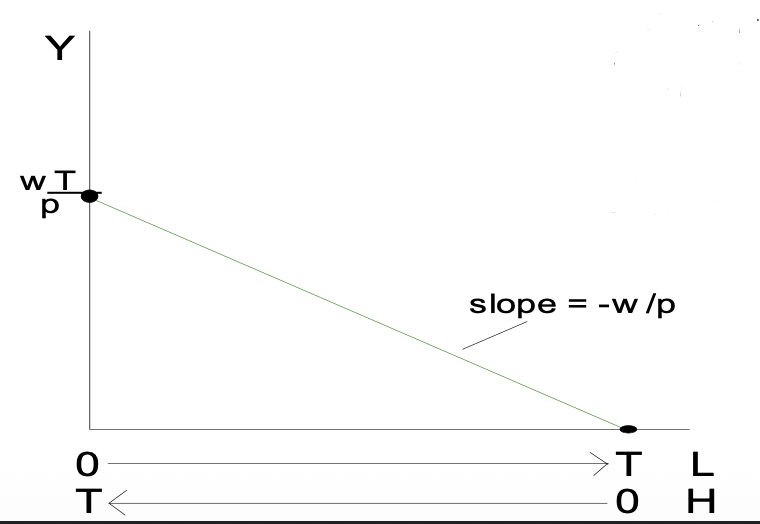
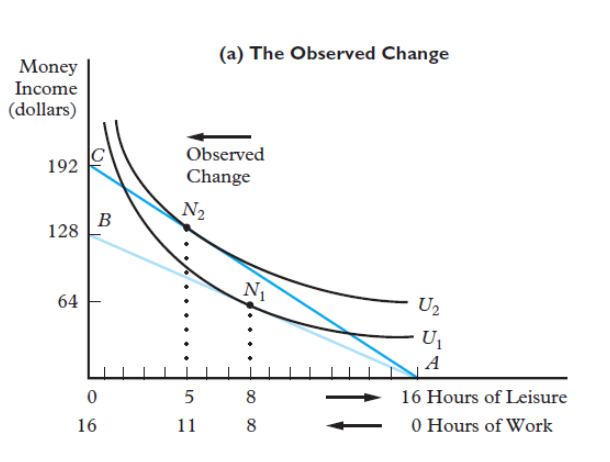
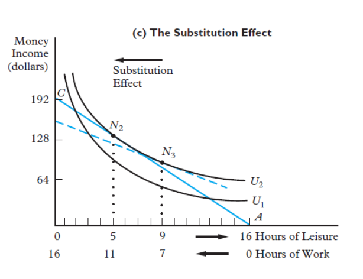
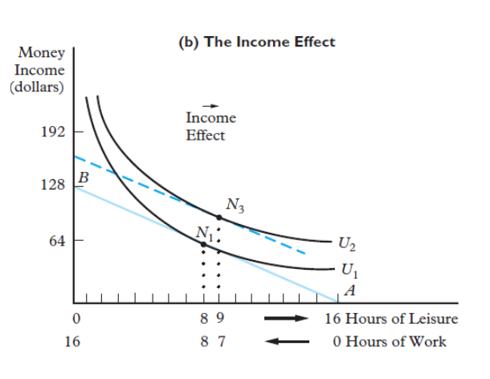
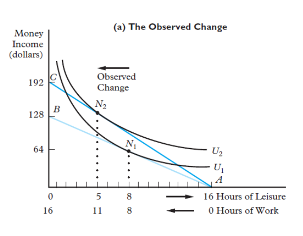
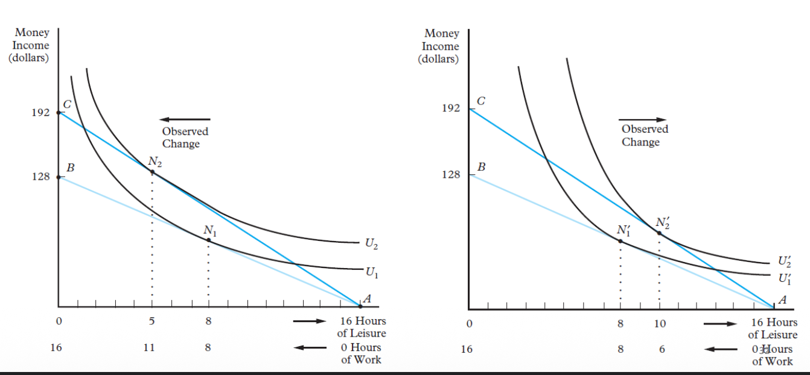
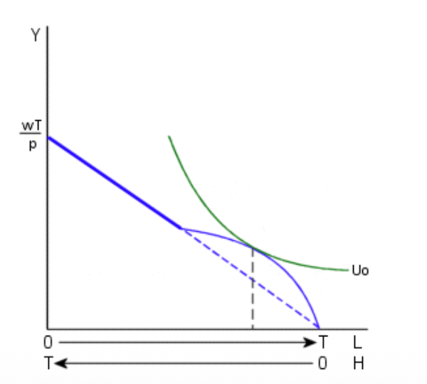

5. Labour Supply Model
⏳ Basic Neoclassical Model of Labour Supply
The neoclassical model examines how individuals allocate their limited time between work (labour) and non-work (leisure). It assumes that individuals are rational agents who aim to maximize their utility.
Fundamental Assumptions
- The Labour-Leisure Trade-off: There are only two uses of time: **Labour** and **Leisure**.
- Utility Maximization: Individuals select the combination of work and leisure that maximizes their level of satisfaction (Utility).
🛋️ The Demand for Leisure
Leisure is modeled as a normal good. Its demand depends on:
1. Preferences
Subjective valuation of free time vs. material goods.
2. Wealth/Income
Higher income generally leads to more leisure (↑ Income → ↑ Hours of leisure).
3. Opportunity Costs
For those working, the opportunity cost of an hour of leisure is the wage rate ($W$).
➡️ Individuals choose not to work if the value of their leisure time exceeds the market wage.
⚖️ Substitution and Income Effects
A change in the wage rate creates two conflicting effects on the quantity of labour supplied:
Substitution Effect (SE)
As wages rise, leisure becomes more expensive. Individuals consume less leisure and work more.
(Positive impact on work hours)
Income Effect (IE)
Higher wages increase real income. If leisure is a normal good, individuals "buy" more leisure and work less.
(Negative impact on work hours)
The Net Effect
Usually, both effects occur simultaneously. The total change in labour supply depends on which effect is stronger:
- Increases if Substitution Effect > Income Effect ($SE > IE$).
- Decreases if Income Effect > Substitution Effect ($IE > SE$).
📈 The Backward-Bending Labour Supply Curve
The Individual Supply Curve (S)

This curve demonstrates how the dominance of the two effects shifts as wages rise:
- At Low Wages (Rising Phase): $SE > IE$. Individuals work more as the wage increases. The opportunity cost of leisure is high.
- At $W_0$: The effects are balanced.
- At High Wages (Backward-Bending): $IE > SE$. Individuals are "rich enough" to value an extra hour of leisure more than the extra income from work.
💡 Summary: The labor supply initially increases with wages but eventually decreases when the Income Effect becomes dominant.
🧠 Preferences
An indifference curve is a graphical representation of alternative combinations of goods that provide a given level of satisfaction (utility) to an individual.
The Utility Function
We assume that an individual's utility depends on two "goods": Real Income ($Y$) and Leisure ($L$). These two goods can substitute for each other to some extent, and both generate satisfaction.
Indifference Curves
An indifference curve is downward sloping because an individual is willing to give up some income to receive additional leisure (or vice versa) while maintaining the same level of utility.
Income-Leisure Trade-off

As leisure increases (moving right), the individual must give up income (moving down) to stay on the same curve.
Comparison of Leisure Preferences

(a) High Value on Leisure
Individual has steep curves. They value leisure deeply and require a very large increase in income to give up even a small amount of free time. They tend to work fewer hours.
(b) Low Value on Leisure
Individual has flatter curves. They are willing to sacrifice free time for relatively small gains in income. They tend to work more hours.
🎯 Constrained Maximization
Individuals attempt to attain the highest possible level of utility. However, their choice is restricted by two fundamental constraints:
- A Time Constraint: Limited hours in a day.
- A Goods (Budget) Constraint: Limited income potential.
The Time Constraint
Total time available ($T$) is split between hours of work ($H$) and leisure ($L$):

Time is a finite resource ($T$) divided between $L$ and $H$.
The Goods Constraint
Your spending on real income ($pY$) must be equal to your earnings ($wH$):
Where $w$ is the wage rate, $H$ is hours worked, $p$ is the price index, and $Y$ is real income.
The Budget Constraint (Algebraic Derivation)
If we combine the two constraints by substituting $H = T - L$ into $pY = wH$:
The Full-Income Constraint
Rearranging the equation gives the Full-Income Constraint:
- Full Income ($wT$): The individual's maximum possible earnings potential if they worked all available time.
- This total "wealth" covers both the explicit cost of goods ($pY$) and the implicit cost (opportunity cost) of leisure ($wL$).
The Final Budget Line Equation

The relationship between real income ($Y$) and leisure ($L$) defines the budget constraint:
Visual Interpretation:
- Vertical Intercept: $\frac{wT}{p}$ (Full income if $L=0$).
- Horizontal Intercept: $T$ (Max leisure if $H=0$).
- Slope: $-\frac{w}{p}$ (The cost of an extra hour of leisure is the real wage lost).
⚖️ Optimal Work/Leisure Mix
Interior Solution: The Optimal Choice

Visual Interpretation:
- The budget constraint (green line) shows all combinations of income ($Y$) and leisure ($L$) the individual can afford.
- The indifference curves ($U_0, U_1, U_2, U_3$) represent different levels of satisfaction.
- Utility is maximized at the point of tangency between the highest possible indifference curve and the budget constraint.
Analytical Interpretation
The consumer maximizes utility $U(Y, L)$ subject to the budget constraint $Y = \frac{w}{p}(T - L)$.
The tangency condition at the optimal point ($L^*$, $Y^*$) is:
Where:
This means the individual chooses their optimal leisure hours such that the subjective value they place on the last hour of leisure (Marginal Rate of Substitution) is exactly equal to its market value (the real wage).
- $L^*$: Optimal leisure hours.
- $H^*$: Optimal work hours ($T - L^*$).
- $Y^*$: Optimal real income.
🚩 Corner Solution
When Choosing Not to Work is Optimal

Visual Interpretation:
A corner solution occurs when the highest attainable level of utility is found at one of the extremes of the budget line—in this case, at zero hours of work ($H = 0$) and maximum leisure ($L = T$).
Analytical Interpretation
A corner solution at zero hours of work happens when the individual's indifference curves are very steep, such that even for the first hour of work:
This implies that:
- The individual values leisure time more than any wage the market is currently offering.
- The opportunity cost of time is relatively high compared to the market wage rate.
➡️ Result: The individual chooses to remain out of the labour force.
📉 Reservation Wage
The Minimum Price for Labour

Visual Interpretation:
- The reservation wage ($w^r$) is represented by the slope of the indifference curve at the point where the individual is not working ($L = T, H = 0$).
- This slope (the orange line in the graph) represents the value placed on the very first hour of lost leisure time.
Analytical Interpretation
Formal definition of the reservation wage:
Or expressed via marginal utilities:
Economic Meaning: It is the absolute minimum wage that would make an individual willing to sacrifice even one hour of leisure to enter the market. If the offered market wage is below this level, the individual will not work.
💰 Nonlabour Income
In our initial model, we assumed all income came from working. However, individuals often receive nonlabour income ($A$), also known as "unearned income." This includes interest, dividends, rent, alimony, or government transfers.
- Key Characteristic: Nonlabour income does not vary with the number of hours worked.
Updated Constraints
With nonlabour income ($A$), our constraints evolve:
- Time: $H + L = T$
- Goods: $wH + A = pY$
Substituting $H = T - L$ into the goods constraint:
The final budget constraint equation becomes:
- Slope: Still $-\frac{w}{p}$ (the relative price of leisure is unchanged).
- Intercept: $\frac{wT + A}{p}$ (shifted upward by $A/p$).
Effect of an Increase in Nonlabour Income
Shift in the Budget Constraint

Pure Income Effect
If leisure is a normal good, an increase in nonlabour income ($A_0 \to A_1$) leads to:
- More Leisure ($L \uparrow$)
- Less Work ($H \downarrow$)
Visual Summary
The budget line shifts vertically upward. The slope remains constant. The individual reaches a higher indifference curve ($U_0 \to U_1$) and chooses more leisure because they are "richer" without work being more rewarding.
➡️ Result: Any increase in "unearned" wealth reduces the hours supplied to the market.
🔬 Understanding the Mechanics: SE & IE Decomposition
When a wage change occurs, it's not just one simple movement. Two powerful economic gears turn simultaneously within an individual's mind. To understand which one "wins" (and thus why someone works more or less), we use the Hicksian decomposition to split the total change into two distinct parts.
The Observed Change ($N_1 \to N_2$)

This graph shows how an individual moves from an initial equilibrium ($N_1$) to a final one ($N_2$) after a wage increase.
The Substitution Effect ($N_1 \to N_3$)

Imagine the wage increases, but we "tax away" just enough of the person's new wealth so they stay on their original utility level ($U_1$). They aren't "richer," but the relative price of their time has changed.
- Economic Intuition: Leisure is now more expensive relative to consumption. Rational actors will "substitute" away from the expensive good (leisure) toward the cheaper one (working for income).
- Direction: Always pushes toward more work ($H \uparrow$) when wages rise.
The Income Effect ($N_3 \to N_2$)

Now, we "give back" the wealth we hypothetically took. The individual moves from the compensated line to the final budget line (reaching $U_2$). Their purchasing power has increased.
- Economic Intuition: Since leisure is a normal good, as you become wealthier, you want to "buy" more of it. You feel rich enough to afford more free time.
- Direction: Always pushes toward less work ($H \downarrow$) for a normal good.
The Battle of the Effects
The total observed movement from $N_1$ to $N_2$ is the result of this internal tug-of-war:
Substitution > Income:
The individual works more. The reward for working is more tempting than the desire for extra rest.
Income > Substitution:
The individual works less. They prioritize their quality of life over extra earnings.
💡 Pro-Tip for Exams:
When studying the participation decision (the choice to enter the market or stay out), remember that the Substitution Effect is nearly always the dominant force.
⚖️ The Net Effect: Predicting Actual Behavior
In the real world, we never see the "Substitution Effect" or the "Income Effect" separately. We only see the Net Effect—the final decision made by the individual. Whether someone works more or less after a raise depends entirely on which effect is "louder" in their decision-making process.
Substitution Effect Dominates

IE - More Work" style="max-width: 100%; height: auto; border: 1px solid var(--clr-purple-border); border-radius: 8px;">Scenario: The income effect is smaller than the substitution effect ($|SE| > |IE|$).
- Observation: As the wage rises ($w_0 \to w_1$), hours of work increase ($H \uparrow$) and leisure falls ($L \downarrow$).
- Logic: The individual is so motivated by the higher "price" of their time that they choose to sacrifice rest for more earnings.
↗️ Result: Upward-Sloping Supply
Income Effect Dominates

SE - More Leisure" style="max-width: 100%; height: auto; border: 1px solid var(--clr-purple-border); border-radius: 8px;">Scenario: The income effect is stronger than the substitution effect ($|IE| > |SE|$).
- Observation: As the wage rises, hours of work actually fall ($H \downarrow$) and leisure increases ($L \uparrow$).
- Logic: The person feels "rich enough." They use their higher wage to "buy back" their time, prioritizing quality of life over extra money.
↖️ Result: Backward-Bending Supply
🏛️ Policy Analysis: Income Replacement Programs
How do social policies change the way people decide to work? By looking at Unemployment Compensation and Welfare, we can see how budget constraints are "warped" by government intervention.
Initial Equilibrium

Before any policy is applied, the individual is at point A, balancing their leisure ($L_0$) and income ($Y_0$) based on the market wage ($w$). At this point, their subjective value of time ($MRS$) exactly matches the market wage.
Unemployment Compensation (Full Replacement)

What happens if a program compensates 100% of your lost income if you stop working? This creates a "spike" in the budget constraint at the point of zero work ($L=T$).
- Movement: The individual moves from A (working $H_0$) to B (not working).
- The Incentive Problem: At point B, the individual has the same income as before but more leisure. They reach a significantly higher utility curve ($U' > U_0$).
🚨 Warning: Full income replacement creates a massive disincentive to return to work.
The Basic Welfare System

Many welfare systems guarantee a minimum income level ($Y_t$). However, for every dollar you earn through work, the government often reduces your benefits by a dollar.
The Welfare Trap
In the horizontal segment ($Y = Y_t$), your marginal wage is effectively zero. Working one more hour gives you $6, but your welfare check drops by $6.
Disability Insurance
Similar to unemployment, if disability benefits replace 100% of income without accounting for the "value of time," utility increases and individuals are discouraged from rehabilitation.
➡️ Result: These spikes and flat segments in the budget constraint explain why some people stay out of the labour force entirely (Corner Solutions).
The Disincentive Effect of Welfare
Why exactly does a guaranteed income ($Y_t$) reduce work? It's a double-blow to labour supply:
- Substitution Effect: Since every dollar earned reduces benefits by a dollar, the reward for working an extra hour is zero. Leisure has zero opportunity cost.
- Income Effect: The individual is richer than they would be without welfare. Since leisure is a normal good, they want to consume more of it.
➡️ Result: Both effects point in the same direction: Leisure increases ($L \uparrow$) and Work decreases ($H \downarrow$).
Labour Force Exit: Quitting Entirely

Some individuals who worked before the welfare system might now find it optimal to quit completely. This happens if the utility they get from $Y_t$ with $T$ hours of leisure ($U'$) is higher than the utility they got from working ($U_0$).
Who is affected?
- People whose market wage is low.
- People who have a high subjective valuation of leisure.
🛡️ Policy Solutions: Workfare & EITC
To combat the "Welfare Trap," governments design systems that reward participation or mandate work. The two most common are Workfare and the Earned-Income Tax Credit (EITC).
The Workfare System

The Rule: Recipients must work a minimum number of hours ($H_m$) to qualify for benefits.
- H < Hm: Zero welfare benefits. The individual only earns their market wage.
- H ≥ Hm: Full welfare benefits granted.
↗️ Increases Participation
Earned-Income Tax Credit (EITC)
Unlike welfare, EITC provides a tax credit that rises with income initially. It is designed to make work more rewarding for low-income families.
- Phase-in: Every dollar earned increases the credit (Acting like a wage subsidy).
- Plateau: The credit stays constant.
- Phase-out: As income rises further, the credit gradually declines.
✅ Lower Disincentive Effects
Intuition Summary
Workfare forces the individual to choose between "working and getting benefits" or "not getting anything." It creates a jump in the budget constraint that usually pushes recipients to work exactly $H_m$ hours. Empirically, it successfully increases labour market participation rates.